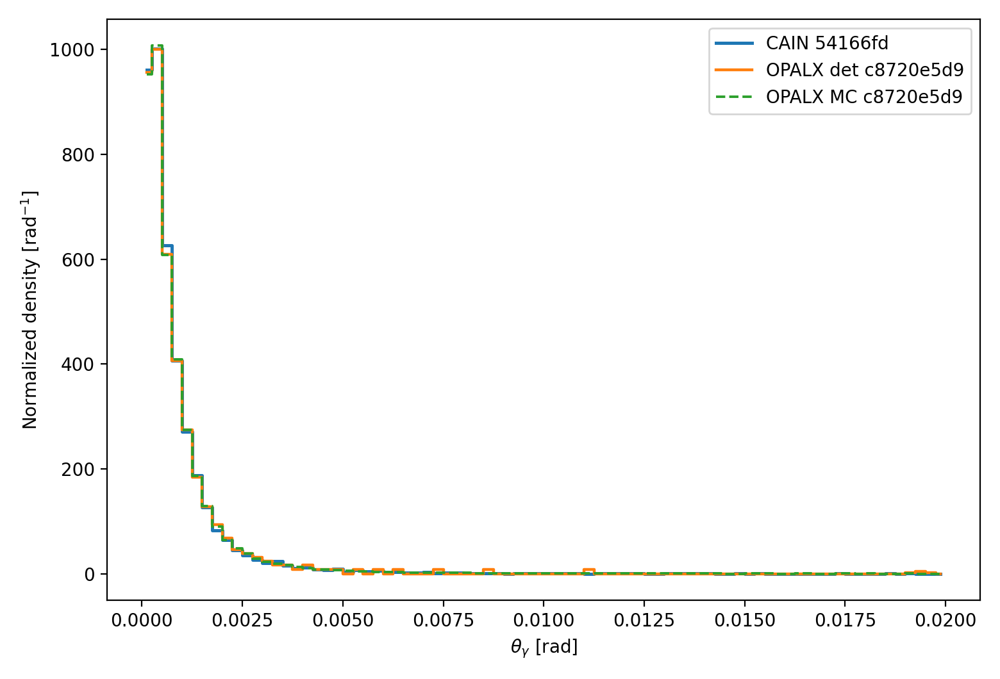
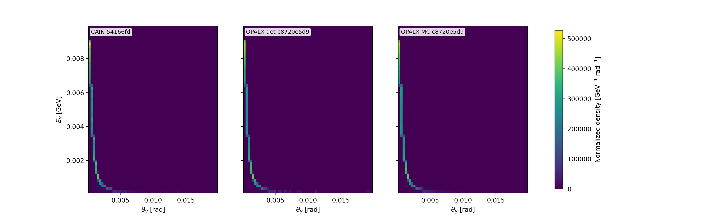
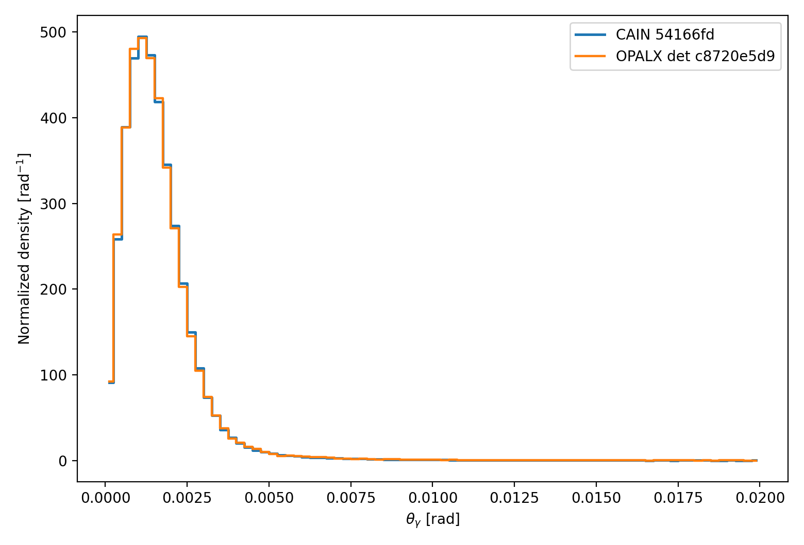
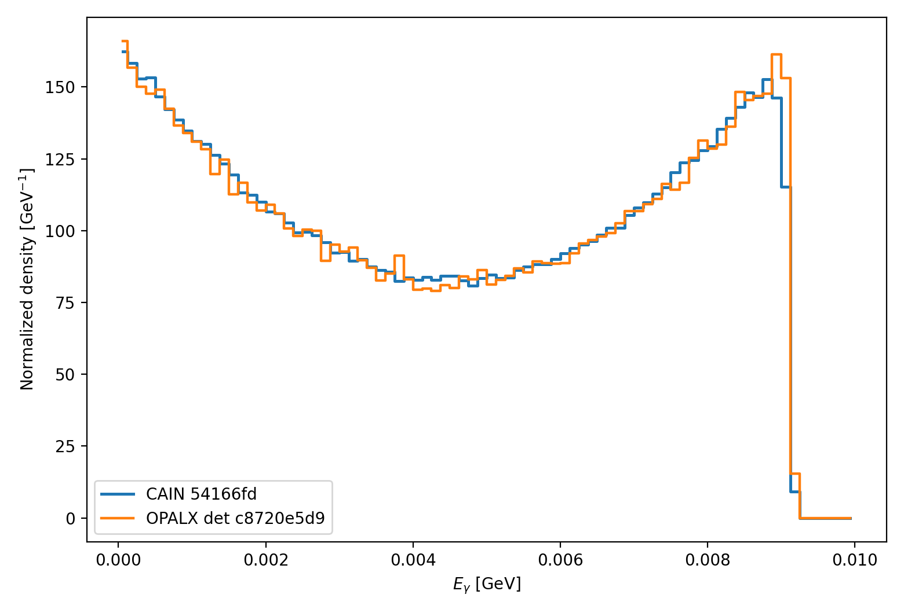
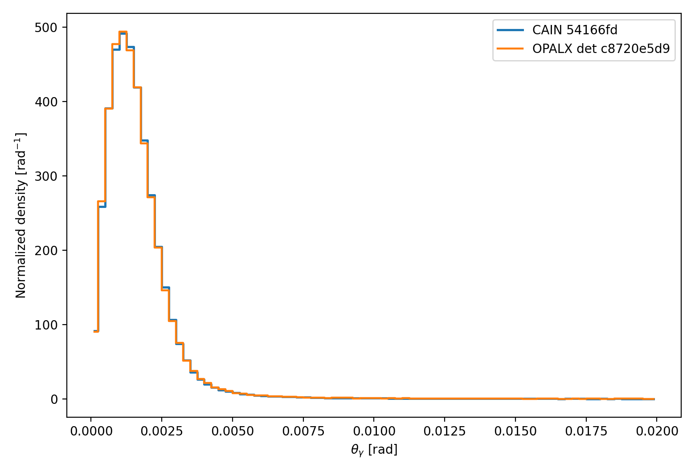

Linear Compton Benchmark
1 Scope
This note documents the current OPALX validation path for linear inverse Compton scattering in the weak-field regime. The immediate goal is not yet a full tracking implementation, but a CAIN-validated benchmark path for the process
\[e^- + \gamma_L \rightarrow e^- + \gamma .\]
The benchmark follows the same staged strategy as the Breit-Wheeler note:
start from a fixed-geometry, unpolarized, linear process,
validate deterministic and sampled spectra against CAIN,
then extend to broader beam models without enabling tracked interaction yet.
The baseline geometry used here is a \(90^\circ\) crossing between a 1 GeV electron beam along \(\hat z\) and a laser photon beam along \(\hat x\) with wavelength 1030 nm.

2 Physics Models
2.1 Basic Kinematics
For a laser wavelength \(\lambda_L\), the photon energy is
\[\omega_L = \frac{2 \pi \hbar c}{\lambda_L} . \label{eq:ics-laser-energy}\]
For an electron with total energy \(E_e\) and momentum magnitude \(p_e = \sqrt{E_e^2 - m_e^2}\), the exact forward-scattered photon energy in the 90 degree benchmark geometry is
\[\omega_\gamma' = \frac{E_e \, \omega_L} {\omega_L + \frac{m_e^2}{E_e + p_e}} . \label{eq:ics-forward-energy}\]
The current OPALX helper uses this numerically stable form directly in the unit benchmark.
2.2 Rest-Frame Model
The exact linear Compton kernel is evaluated in the electron rest frame. Let \(\omega_1\) be the incoming photon energy there and let \(\Theta^*\) be the photon scattering angle. The scattered photon energy is
\[\omega_2(\Theta^*) = \frac{\omega_1} {1 + (\omega_1/m_e)(1 - \cos \Theta^*)} . \label{eq:ics-erf-energy}\]
The unpolarized Klein-Nishina differential cross section is
\[\frac{d\sigma}{d\Omega^*} = \frac{r_e^2}{2} \left(\frac{\omega_2}{\omega_1}\right)^2 \left( \frac{\omega_1}{\omega_2} + \frac{\omega_2}{\omega_1} - \sin^2 \Theta^* \right) . \label{eq:ics-klein-nishina}\]
Changing variables from \(\cos\Theta^*\) to \(\omega_2\) gives the one-dimensional energy spectrum in the rest frame,
\[\frac{d\sigma}{d\omega_2} = 2\pi \frac{d\sigma}{d\Omega^*} \frac{m_e}{\omega_2^2} . \label{eq:ics-dsigma-domega}\]
with exact support \(\omega_2 \in [\omega_1/(1+2\omega_1/m_e),\,\omega_1]\).
The exact total Klein-Nishina cross section can be written with \(\kappa = \omega_1/m_e\) as
\[\sigma_{\mathrm{KN}} = 2\pi r_e^2 \left[ \frac{1+\kappa}{\kappa^3} \left( \frac{2\kappa(1+\kappa)}{1+2\kappa} - \ln(1+2\kappa) \right) + \frac{\ln(1+2\kappa)}{2\kappa} - \frac{1+3\kappa}{(1+2\kappa)^2} \right] . \label{eq:ics-total-cross-section}\]
For \(\kappa \ll 1\) this approaches the Thomson limit
\[\sigma_T = \frac{8\pi}{3} r_e^2 . \label{eq:ics-thomson}\]
3 Implemented OPALX Benchmark
The current OPALX implementation is the CAIN-validated benchmark path on the laser-element-1 branch. The relevant code files are:
~/git/OPALX-project.github.io/gamma-gamma/generate-gamma-gamma-results.sh~/git/cain/generate-linear-compton-results.sh~/git/cain/build-cain.sh
The benchmark remains deliberately narrow:
no tracked
LASERinteraction,no photon bunch population,
no luminosity or overlap integration beyond the benchmark setup.
The validated observables are now:
4 Results of Code Comparison
The current CAIN-backed OPALX benchmark covers weak-field linear inverse Compton scattering for:
electron total energy
1GeV,laser wavelength
1030nm,crossing angle \(90^\circ\),
unpolarized laser
STOKES=(0,0,0),CAIN weak-field parameter \(\xi = 0.2955 < 0.3\).
Single-electron benchmark agreement:
Finite-beam benchmark agreement:
Single-electron overlays:



Finite-beam overlays:







5 Build and Run
The CAIN build helper is now shared across the gamma-gamma notes in the common workspace ~/git/cain.
From ~/git/cain:
./build-cain.sh --download
./build-cain.sh --compileThe preferred one-shot workflow is run from the docs tree:
cd ~/git/OPALX-project.github.io/gamma-gamma
./generate-gamma-gamma-results.sh --opalx-build /path/to/opalx-laser/build_openmpThis top-level driver:
builds the OPALX gamma-gamma benchmark targets,
runs the inverse-Compton and Breit-Wheeler unit/regression suites,
regenerates the CAIN and OPALX benchmark data for both notes,
republishes the comparison figures, and
renders the gamma-gamma note pages.
If only the linear-Compton assets need to be refreshed, use:
cd ~/git/cain
./generate-linear-compton-results.sh --opalx-build /path/to/opalx-laser/build_openmpThis script:
runs the CAIN decks
~/git/cain/cain-linear-compton-90deg.i,~/git/cain/cain-linear-compton-90deg-finite-beam.i,~/git/cain/cain-linear-compton-90deg-finite-beam-energy-spread.i, and~/git/cain/cain-linear-compton-90deg-finite-beam-overlap.i,regenerates the stored CAIN histogram references in
reference-data/,runs the OPALX benchmark executable
LinearComptonSpectrumBenchmark,regenerates the published 1D and 2D comparison plots in
reference-data/.
The script expects:
a built OPALX benchmark executable in the supplied build directory,
a CAIN executable at
~/git/cain/CAIN-build/cain, unless overridden by--cain-bin,the four CAIN decks in
~/git/cain, unless overridden by--cain-deck-dir.
The relevant OPALX build target is:
cmake --build /path/to/opalx-laser/build_openmp \
--target LinearComptonSpectrumBenchmark TestLinearCompton TestLinearComptonSpectrum -j46 References
CAIN linear Compton generator:
src/lncpgn.fCAIN laser geometry helper:
src/lsrgeo.fCAIN manual: User’s Manual of CAIN
7 CAIN Mapping
CAIN evaluates the linear Compton kinematics by boosting the laser photon into the electron rest frame, applying the recoil there, and boosting the scattered photon back to the laboratory frame. In CAIN’s LNCPGN, the incoming photon energy in the electron rest frame is
\[\omega_1 = \gamma \, \omega_L \, (1 - \beta \cos \alpha) . \label{eq:ics-cain-w1}\]
For the present benchmark \(\cos\alpha = 0\), so
\[\omega_1 = \gamma \, \omega_L . \label{eq:ics-cain-w1-90deg}\]
This is the CAIN mapping reproduced by the current OPALX helper and benchmark path.